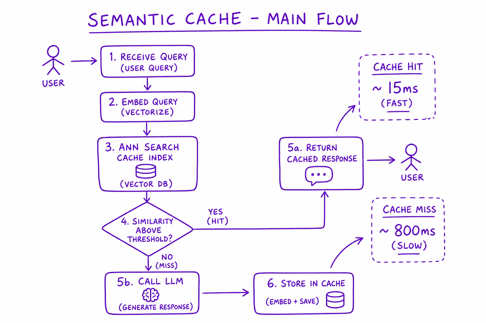
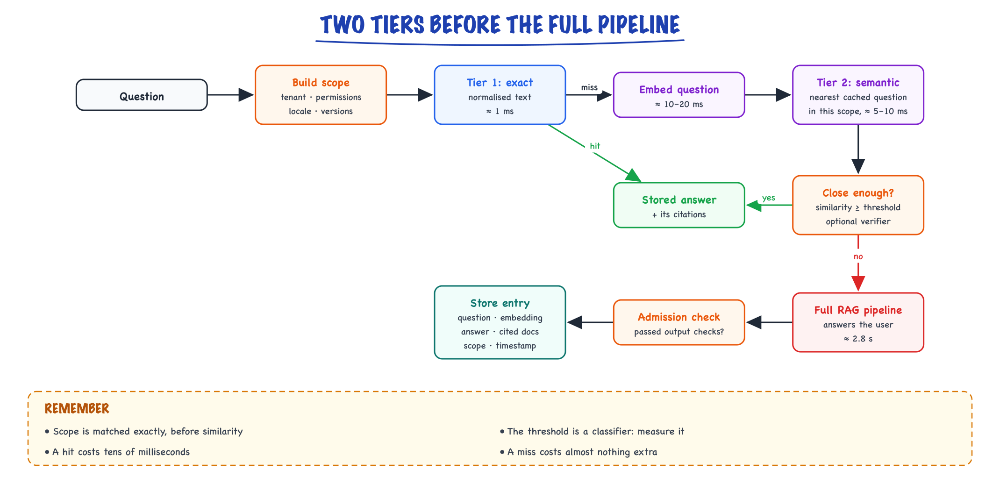
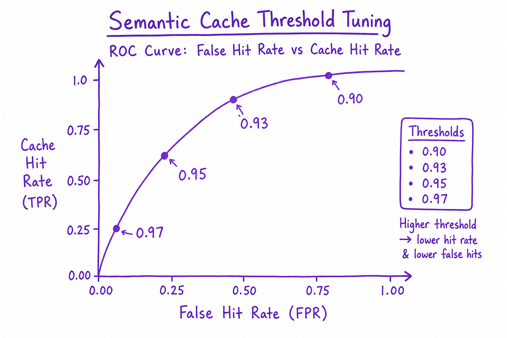
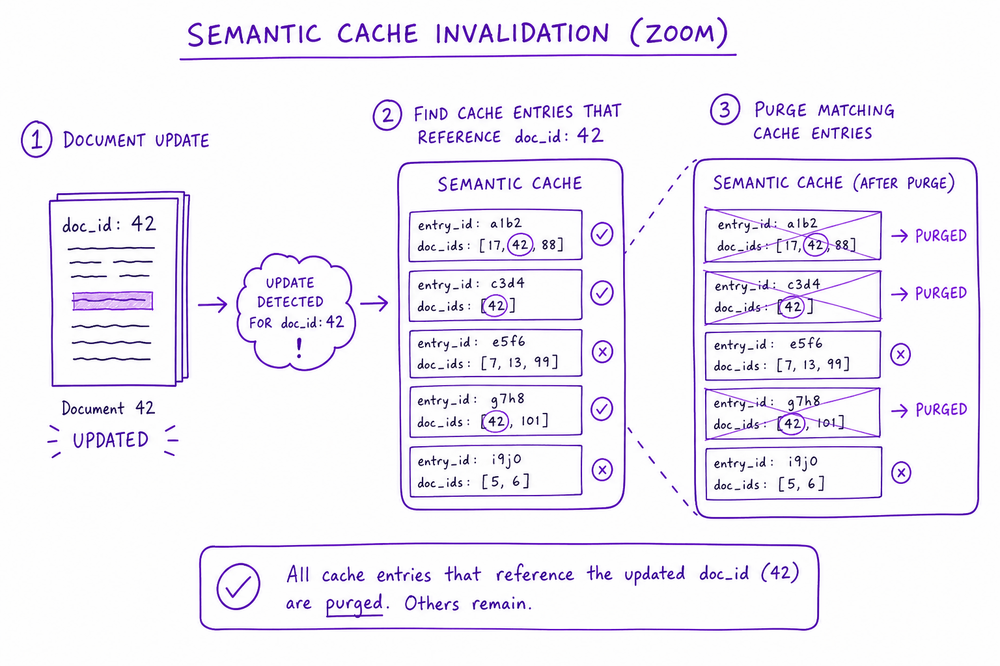

Semantic caching // Production & evals
Answering repeat questions from a cache keyed on meaning, and avoiding wrong hits.
01 — At a glance
Cache LLM responses by embedding similarity, not exact string match. 40–60% hit rates on support bots — but wrong threshold causes confident wrong answers.

Semantic cache flow: embed incoming query, ANN search cache index, if similarity > threshold return cached response else call LLM and store new entry.
02 — New words
| Word | Meaning |
|---|---|
| Exact cache | A cache keyed on the exact (normalised) request text. Hits only on identical questions. |
| Semantic cache | A cache keyed on the meaning of a question: a new question hits if its embedding is close enough to a stored question's. |
| Similarity threshold | The minimum cosine similarity between the new question and the nearest stored one for the stored answer to be returned. |
| Hit rate | The share of requests answered from the cache. |
| False hit | A cache hit where the stored question meant something different, so the returned answer is wrong for this user. |
| Scope | Everything that must match exactly, besides meaning, for a cached answer to be valid: tenant, permissions, language, model and prompt versions. |
| TTL | Time to live: how long an entry may be served before it expires. |
| Invalidation | Removing or expiring entries because something they depend on changed, such as a cited document. |
| Verifier | A second, more precise check on a candidate hit (a cross-encoder or a small model) that asks "do these two questions have the same answer?". |
| Admission policy | The rule for which answers are allowed into the cache at all. |
| Shadow mode | Running the cache lookup on live traffic without serving its answers, to measure what would have happened. |
The lesson
03 — The question
Support assistants hear the same questions all day, worded differently: "how do I reset my router", "router reset steps", "my wifi box needs a reset, how?". Each one, answered from scratch, pays for retrieval, a long prompt and a full generation, and the user waits seconds. An exact-match cache barely helps, because people rarely type the same string twice. A semantic cache matches on meaning instead: embed the new question, find the most similar question already answered, and if they are close enough, return the stored answer in milliseconds.
The idea is simple. The engineering is entirely in one word, "enough". Set the bar too low and the cache returns confident answers to questions nobody asked; too high and it almost never hits. This lesson is about setting that bar with numbers, and about everything else that must match for a stored answer to be valid.
The interview questions:
- How does a semantic cache work, and why is an exact cache not enough?
- How do you choose the similarity threshold, and what does a false hit cost?
- What must be part of the cache key, and how do you keep entries fresh?
- When is a semantic cache a bad idea?
The running example: an internet service provider's support assistant, answering about 60,000 questions a day with RAG. An uncached answer costs about $0.01 (illustrative: retrieval, a 4,000-token prompt, a 250-token answer) and takes about 2.8 seconds. About 45% of daily questions repeat an intent that has already been answered recently, in some wording.
04 — Step 1: why exact matching misses most repeats
An exact cache hashes the request and looks it up. Normalising first (lower-case, collapse spaces, strip punctuation) catches trivial variants, and it is worth doing because it is nearly free: an in-memory hash lookup in about a millisecond. But for free-text questions, exact repeats are a small slice of traffic. Most repetition is paraphrase: the same need, different words. "How do I reset my router?" and "router reset steps" share no normalised string, so an exact cache treats them as unrelated.
Embeddings (see embeddings) map texts with similar meaning to nearby vectors. The two router questions might have a cosine similarity of 0.95; "how do I reset my password?" might score 0.88 against them, because it shares most words and the topic "reset" but needs an entirely different answer. That last example is the whole difficulty in one line: embedding similarity measures how alike two texts are, not whether they have the same answer.
05 — Step 2: the mechanism

A question is scoped first, then tried against an exact cache and a semantic cache; only a miss on both runs the full RAG pipeline, whose checked answer is stored for next time.
Each stored entry holds the original question, its embedding, the answer, the documents the answer cited, the scope it was produced under, and a timestamp. The nearest-neighbour search runs over stored questions, not documents, using any vector index (an in-memory index, Redis with vector search, or the same database as your RAG chunks in a separate collection).
A hit costs the embedding call plus one small vector search, tens of milliseconds, against 2.8 seconds for the full path. The query embedding is needed for retrieval on a miss anyway, so a miss costs almost nothing extra.
06 — Step 3: the threshold is a classifier, so measure it like one
For every incoming question, the cache's decision is a binary classification: "the nearest stored question has the same answer" or not. The threshold trades two errors: missed hits (wasted money) and false hits (wrong answers). You cannot choose it by intuition or by copying "0.95" from a blog post, because similarity distributions depend on the embedding model, the domain and the phrasing of your users.
Measure it. Take a few thousand logged questions, find each one's nearest neighbour among the others, and have people label 500 of those pairs as "same answer" or "different answer". Plot the two groups' similarity distributions. In our ISP data, suppose the same-answer pairs centre around 0.94 (spread 0.03) and the different-answer nearest neighbours around 0.80 (spread 0.05). They overlap: some different-answer pairs score 0.90 or more, and those are exactly the ones that hurt.
The dangerous pairs have a recognisable shape, and they belong in your labelled set on purpose:
- Entity swaps: "cancel my order" versus "cancel my subscription"; "router model X100" versus "X200".
- Negation and direction: "can I upgrade mid-contract?" versus "can I downgrade mid-contract?".
- Numbers, dates and places: "outage in Leeds today" versus "outage in Leeds last week".
- Personal state: "why is my bill higher this month?" has a different true answer for every customer.
07 — Step 4: the economics of a false hit
Now put a price on each outcome. Per question, the expected cost of running a cache is
\[ C = c_{\text{lookup}} + (1 - h)\, c_{\text{LLM}} + f\, c_{\text{wrong}} \]where \(h\) is the hit rate (as a share of all questions), \(f\) the false-hit rate (also as a share of all questions), \(c_{\text{lookup}}\) the cost of embedding and searching, \(c_{\text{LLM}}\) the cost of the full RAG answer, and \(c_{\text{wrong}}\) the expected cost of serving a wrong answer. Without a cache, \(C = c_{\text{LLM}}\).
\(c_{\text{wrong}}\) is the term people forget. For the ISP, a wrong answer sometimes leads to a follow-up contact with a human agent, sometimes to a wasted technician visit, sometimes to nothing. Suppose the expected cost works out to $0.20 (illustrative), twenty times an LLM call. With \(c_{\text{lookup}} = \$0.0002\), \(c_{\text{LLM}} = \$0.01\), and 45% of questions having a same-answer entry in cache, the distributions from Step 3 give:
| Threshold | Hit rate | Hits that are false | Cost per question | vs no cache |
|---|---|---|---|---|
| 0.86 | 51.2% | 12.4% | $0.0177 | +77% |
| 0.88 | 47.0% | 6.4% | $0.0115 | +15% |
| 0.90 | 42.1% | 3.0% | $0.0085 | −15% |
| 0.92 | 34.1% | 1.3% | $0.0077 | −23% |
| 0.94 | 22.6% | 0.6% | $0.0082 | −18% |
Read it slowly. At 0.86 the cache has the most impressive hit rate on the dashboard and costs 77% more than having no cache, because one hit in eight is wrong and wrong answers are expensive. The best threshold here is about 0.92, saving 23%. Raise \(c_{\text{wrong}}\) (medical or financial answers) and the optimum moves up; lower it (a recipe bot) and it moves down. The threshold is a business decision expressed as a number, and the hit rate alone is not the metric to optimise.
Latency gains follow the hit rate. At 34% hits, mean response time falls from 2.8 seconds to about \(0.66 \times 2.8 + 0.34 \times 0.03 \approx 1.9\) seconds, and the hits feel instant.
08 — Step 5: a verifier widens the safe zone
Similarity from a bi-encoder (two texts embedded separately, then compared) is fast but coarse. A verifier looks at the two questions together and asks the precise question: do they have the same answer? It can be a cross-encoder (the same kind of model as a reranker, scoring the pair jointly) or a small LLM with a strict yes/no prompt. It runs only on candidate hits, so its cost is bounded by the hit rate.
Suppose a verifier costing $0.0003 per check keeps 95% of true hits and rejects 90% of false ones. Re-running the numbers:
| Threshold | Hit rate | Hits that are false | Cost per question | vs no cache |
|---|---|---|---|---|
| 0.86 + verifier | 43.2% | 1.5% | $0.0073 | −27% |
| 0.88 + verifier | 42.1% | 0.7% | $0.0067 | −33% |
| 0.90 + verifier | 39.0% | 0.3% | $0.0067 | −33% |
The verifier lets you lower the similarity threshold to collect more paraphrases while keeping false hits rare: savings rise from 23% to 33%. The architecture is the same as retrieval: a cheap, wide first stage, then a precise second stage. The verifier's own error rates come from the same labelled pairs.
09 — Step 6: scope, everything besides meaning that must match
Two questions with identical meaning can still need different answers. Everything that changes the correct answer must be part of the cache key, matched exactly, before similarity is even computed:
- Tenant. "What is the refund policy?" has a different answer for every business on a multi-tenant platform. Partition the cache by tenant in the lookup itself, never as a filter applied after the nearest-neighbour search.
- Permissions. If the answer was built from documents only some roles may read, it may only be served to users with the same access. Key on a permission-set identifier (for example a hash of the user's groups), as in the access-control rules of making RAG good.
- Language and locale. A cached English answer is wrong for a Spanish speaker even if a multilingual embedding says the questions match.
- Versions. Model, system prompt and retrieval index versions. Changing the prompt to fix a bad behaviour is pointless if the cache keeps serving answers produced by the old prompt.
- Conversation context. "What about for business accounts?" means nothing alone. Cache only standalone questions: first turns, or follow-ups after a rewrite step has turned them into self-contained questions.
Then decide what is cacheable at all. Answers that depend on the individual user (their bill, their outage, their order) must not be shared, and usually should not be cached. A cheap classifier or a rule on which tools the answer used ("called the billing API" means personal) keeps them out.
10 — Step 7: freshness and invalidation
A cached answer is a copy of a past computation. It goes stale when the documents behind it change. Three mechanisms, used together:
- Event-driven invalidation. Store the ids of the documents each answer cited, and keep a reverse map from document id to cache entries. When ingestion updates or deletes document
kb-17, expire every entry that cited it. This is the precise mechanism and it covers most staleness in a RAG system. - Version keys. Because the index version is part of the scope (Step 6), a full re-index naturally starts a fresh cache without any purge job.
- TTL as a backstop. Some answers depend on things no document change signals (a temporary outage notice, prices). Set TTLs per category: hours for status-like content, days for stable how-to answers.
Deletions for privacy are the strict case: if a document is removed for legal reasons, answers quoting it must go too, and the reverse map is what makes that possible.
11 — Step 8: what to admit, how big it gets, and stampedes
Admission. Caching a bad answer multiplies it. Store only answers that passed your output checks, cited sources, did not abstain, and were not marked down by the user. Some teams admit only answers whose question has been seen several times, which keeps rare one-offs from filling the cache, or pre-fill the cache with reviewed answers to the top few hundred questions.
Size. Each entry holds an embedding (1,536 dimensions × 4 bytes ≈ 6 KB) plus the answer and metadata (about 2 KB). A million entries is about 8 GB, comfortable for one Redis node or a vector database collection. Evict by least-recently-used or least-frequently-used; the tail of one-off questions contributes little.
Stampedes. When a popular question first arrives (an outage starts and thousands ask "is the internet down in Leeds?"), every request misses at once and all of them run the full pipeline. Coalesce concurrent misses for the same normalised question so one request computes and the others wait for its result, and pre-warm the cache for known spikes.
12 — Step 9: how it relates to the other caches
A semantic cache is one of several caches in an LLM application, and they are complementary:
- Prompt (prefix) caching by the model provider or serving engine reuses the computed attention state for a repeated prompt prefix, such as a long system prompt. It cuts the cost and latency of every call but still generates a fresh answer. It is exact, invisible to correctness, and covered in cost and latency.
- Embedding cache: an exact cache from text to its vector, so repeated texts are never embedded twice.
- Retrieval cache: cache the retrieved chunk ids for a question, then still generate. Safer than caching answers, smaller savings.
- Semantic answer cache: this lesson. The largest saving and the only one that can return a wrong answer.
13 — Rolling it out safely
- Measure the opportunity. From logs, estimate how much traffic repeats an intent within your TTL. If it is under about 10 to 15%, the cache will not repay its complexity.
- Label pairs. 500 or more nearest-neighbour pairs, deliberately including entity swaps, negations and personal questions. Fit the threshold (and verifier) to your cost of a wrong answer, as in Steps 4 and 5.
- Shadow mode. Run lookups on live traffic for a week without serving them. Log every would-be hit, judge a sample (an LLM judge plus human review) and measure the real false-hit rate.
- Launch narrow. Serve hits only for scopes and categories where shadow mode looked clean, at a conservative threshold.
- Monitor. Hit rate, false-hit rate from sampled judging, thumbs-down rate on cached versus fresh answers (if cached answers are disliked more often, the threshold is too low), savings, and cache size. Keep a switch to disable serving instantly.
14 — In code: the threshold economics, and a scoped cache
The cost model from Steps 4 and 5. The similarity distributions are the illustrative ones from Step 3; in practice you fit them to your labelled pairs.
import math def above(t, mean, sd): # P(similarity > t) under a normal distribution return 0.5 * (1 - math.erf((t - mean) / (sd * math.sqrt(2)))) SAME, DIFF, P_SAME = (0.94, 0.03), (0.80, 0.05), 0.45 # fitted on labelled pairs (illustrative) C_LLM, C_LOOKUP, C_WRONG, C_VERIFY = 0.010, 0.0002, 0.20, 0.0003 def per_query(t, verify=False): tp, fp = P_SAME * above(t, *SAME), (1 - P_SAME) * above(t, *DIFF) cost = C_LOOKUP if verify: # verifier keeps 95% of true hits, 10% of false ones cost += (tp + fp) * C_VERIFY tp, fp = 0.95 * tp, 0.10 * fp hit = tp + fp cost += (1 - hit) * C_LLM + fp * C_WRONG return hit, fp / hit, cost for verify in (False, True): print("with verifier" if verify else "threshold only") for t in (0.86, 0.88, 0.90, 0.92, 0.94): hit, false_share, cost = per_query(t, verify) print(f" t={t:.2f} hit={hit:5.1%} false hits={false_share:5.1%} " f"$/query={cost:.4f} ({cost / C_LLM - 1:+.0%} vs no cache)")
It prints both tables above. Next, a minimal cache with the two tiers, scope keys, TTL and document-based invalidation. A real one keeps entries in Redis or a vector database and uses an approximate index instead of the loop.
import hashlib, time import numpy as np class SemanticCache: """Two tiers (exact hash, then nearest neighbour), scoped keys, TTL, doc-based invalidation.""" def __init__(self, threshold=0.92, ttl_s=24 * 3600): self.threshold, self.ttl = threshold, ttl_s self.exact, self.entries, self.by_doc = {}, {}, {} @staticmethod def scope(tenant, perm_set, locale, versions): # what must match exactly return (tenant, perm_set, locale, versions) def get(self, scope, text, vec, now=None): now = now or time.time() key = (scope, " ".join(text.lower().split())) # tier 1: normalised exact match e = self.exact.get(key) if e and now - e["at"] < self.ttl: return e["answer"], "exact", 1.0 best, best_sim = None, -1.0 # tier 2: nearest cached query for e in self.entries.get(scope, []): # (an ANN index in production) sim = float(vec @ e["vec"]) # unit vectors: dot = cosine if sim > best_sim and now - e["at"] < self.ttl: best, best_sim = e, sim if best and best_sim >= self.threshold: return best["answer"], "semantic", round(best_sim, 3) return None, "miss", round(best_sim, 3) def put(self, scope, text, vec, answer, cited_docs, now=None): e = {"vec": vec, "answer": answer, "at": now or time.time(), "docs": set(cited_docs)} self.exact[(scope, " ".join(text.lower().split()))] = e self.entries.setdefault(scope, []).append(e) for d in cited_docs: self.by_doc.setdefault(d, []).append(e) def invalidate_doc(self, doc_id): # a cited document changed for e in self.by_doc.pop(doc_id, []): e["at"] = float("-inf") # expired everywhere it is referenced def unit(v): v = np.asarray(v, dtype=float); return v / np.linalg.norm(v) cache = SemanticCache(threshold=0.92) s = SemanticCache.scope("isp-co", "customer", "en", ("gpt-x", "prompt-v7", "index-41")) cache.put(s, "How do I reset my router?", unit([1, 0.20, 0]), "Hold the reset button 10 s ...", ["kb-17"]) print(cache.get(s, "how do I reset my router?", unit([1, 0.20, 0]))) # exact tier print(cache.get(s, "Steps to reset the router", unit([1, 0.30, 0.05]))) # paraphrase print(cache.get(s, "How do I reset my password?", unit([1, 0.75, 0.30]))) # similar words, other intent other = SemanticCache.scope("isp-co", "agent", "en", ("gpt-x", "prompt-v7", "index-41")) print(cache.get(other, "How do I reset my router?", unit([1, 0.20, 0]))) # other permission scope cache.invalidate_doc("kb-17") print(cache.get(s, "Steps to reset the router", unit([1, 0.30, 0.05]))) # source changed
The output shows an exact hit, a paraphrase hit at 0.994, a miss for "reset my password" at 0.877 (similar words, different intent, below the threshold), a miss for the same question under a different permission scope, and a miss after the cited document kb-17 changed.
Quick reference
15 — What & Why
LLM inference is expensive. Many user queries are near-duplicates ('reset password' vs 'how do I reset my password'). Semantic cache cuts cost and latency.
16 — Core Concepts
| Term | Definition | Gotcha |
|---|---|---|
| Cache hit | Similar query found above threshold | False hit = wrong answer confidently |
| Threshold | Min cosine similarity for hit | 0.92–0.97 depending on domain |
| TTL | Time-to-live before cache miss forced | Stale policy answers |
17 — API Surface
cache.lookup(query_embedding, org_id) -> { hit, response, score } | miss
cache.store(query, embedding, response, ttl=3600, metadata={sources})
# GPTCache / Redis + vector extension18 — When to Use / When NOT
| Cache | Use When | Skip When |
|---|---|---|
| Semantic | FAQ/support high repeat | Unique analytical queries |
| Exact only | Deterministic API responses | Paraphrase-heavy support |
19 — Architecture
Query -> Embed -> Cache ANN lookup -> [hit: return] [miss: LLM -> store]
20 — Deep Dive: Threshold Tuning

ROC curve: false hit rate vs cache hit rate at thresholds 0.90, 0.93, 0.95, 0.97
Start 0.95. Lower = more hits + more false hits. Evaluate on query pairs labeled same/different intent.
21 — Deep Dive: TTL & Freshness
Policy docs: TTL 1–24h. Product FAQs: 7d. Include source content_hash in cache entry; invalidate on doc update.
22 — Deep Dive: Invalidation

Doc update triggers purge of cache entries whose citations reference changed doc_id
On doc delete/update: purge entries with matching source doc_ids. Bloom filter for fast candidate check.
23 — Deep Dive: Exact + Semantic Two-Tier
L1: exact hash match (Redis). L2: semantic ANN. Exact hits ~5ms; semantic ~15ms; both beat LLM ~800ms.
24 — Deep Dive: Multi-Tenant
- Namespace every cache entry by tenant (org_id), and include the user's permission scope when answers depend on it.
- Never return an entry from a different tenant, however similar the question: two companies asking "what is our refund policy?" need different answers.
- Enforce the namespace in the lookup query itself, not as a filter after the nearest-neighbour search.
- Per-tenant TTLs and invalidation, so one tenant's document update purges only its own entries.
In production
25 — Production & Ops
- Monitor hit rate, false hit rate (thumbs down on cached)
- Cache stampede on cold start — pre-warm top queries
27 — Where people get lost
- Threshold too low — wrong answers cached
- No invalidation on doc update
- Cross-tenant cache leakage
- Caching personalized responses under shared key
- "Use 0.95, that is the standard threshold." Similarity scales differ by model and domain. Fit the threshold to labelled pairs and to the cost of a wrong answer.
- Optimising hit rate. A higher hit rate with more false hits can cost more than no cache at all. Optimise expected cost, including wrong answers.
- "Similar embeddings mean the same answer." Embeddings capture topic and wording; "cancel order" and "cancel subscription" are close and need different answers. Add a verifier for the risky zone.
- Leaving tenant or permissions out of the key. One user's answer, built from documents they may read, is served to someone who may not. Scope first, then search.
- Caching personal answers. "Why is my bill higher?" is different for everyone. Mark answers that used personal data or tools as uncacheable.
- No invalidation. The cache keeps serving last month's policy after the document changed. Store cited document ids and expire on change; use TTL only as a backstop.
- Caching follow-up turns. "And for business accounts?" is not a standalone question. Cache only first turns or rewritten standalone questions.
28 — How this connects
Builds on
- Embeddings — Turning meaning into numbers: dense vectors, cosine similarity, sentence embeddings and contrastive training.
- Vector search & databases — Exact and approximate nearest neighbours, HNSW and IVF, and choosing a vector database.
- The RAG pipeline — Retrieve, augment, generate: every stage from a question to a grounded, cited answer.
- Reranking — Cross-encoder rerankers: retrieve wide, rescore, keep the best few.
- Making RAG good & measuring it — Advanced RAG, a production RAG chatbot design, retrieval and answer metrics, freshness, ACLs, latency, injection.
- Cost & latency — Where the money and the milliseconds go: pricing, prefill vs decode, routing, batching and prompt caching.
Where this shows up later
- Hybrid LLM patterns — LLM extracts and code decides, routing and cascades, LLMs with classic ML, guardrails, text-to-SQL.
- Interview answer kit — Model answers for the eval and RAG/agent questions, and the follow-ups to prepare.